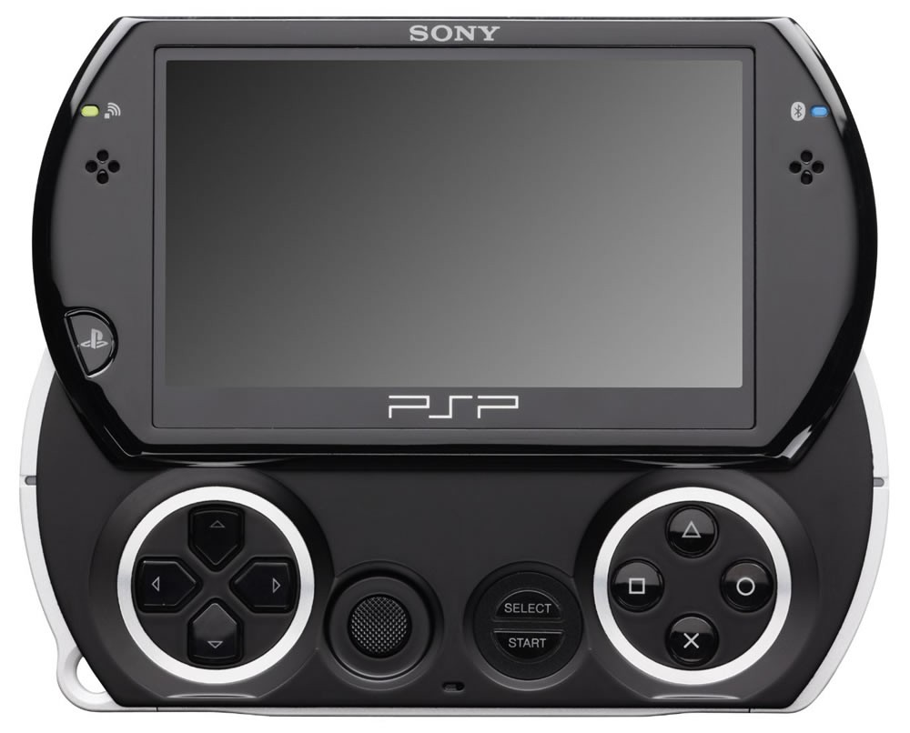

Evolução do Playstation:
Do Psone ao PS5

A partir de 19 de novembro de 2020 chega às lojas brasileiras (e de todo o mundo) o PlayStation 5, mais novo console de videogame da Sony. O PS5 eleva os jogos a um outro patamar, com gráficos melhores, tempo de inicialização menor e uma experiência online mais refinada e completa.
E para celebrar a chegada do PS5, decidimos fazer este artigo remontando toda a história do PlayStation, que já soma mais de 2 décadas e meio bilhão de unidades vendidas em todo o mundo. A marca PlayStation talvez seja a mais lucrativa da Sony e significa entretenimento e diversão para milhões de pessoas.
Falaremos também sobre os jogos mais marcantes ao longo desses 25 anos. Então, aperte os cintos, acomode-se bem na cadeira, no sofá ou na cama e prepare-se para uma prazerosa viagem no tempo!
PlayStation (PSOne) – 1995
Quando eu ouço esse som a nostalgia bate com força! O primeiro PlayStation de todos foi lançado no Japão em 03 de dezembro de 1994. Mas só chegou a mercados internacionais, como os Estados Unidos e Europa, no dia 09 de setembro de 1995. No Brasil ele nunca chegou a ser vendido oficialmente. Mas o mercado informal cansou de ganhar dinheiro vendendo o primeiro PlayStation.
Na época os consoles mais famosos, como o Super Nintendo e o Nintendo 64 ainda usavam cartuchos. Então, quando o PlayStation chegou usando CDs isso foi meio que uma inovação na época. Os CDs permitiam um som melhor e processamento 3D. Ele vendeu mais de 100 milhões de unidades em uma década.
O primeiro PlayStation tinha um visual bem “grosseirão”. Com um formato retangular e de larga espessura, ele era da cor cinza. No centro ficava o espaço de colocar os CDs. Na lateral direita o botão de Liga/Desliga e na lateral esquerda os botões de abrir a tampa do CD e o de Reset. E, na frente, havia os locais para colocar 2 controles e os 2 Memory Cards.
Em 07 de julho de 2000 a Sony lançou uma versão menor. Batizado de PS One, ele tinha a cor branca e, realmente, era bem menor e mais compacto que a versão original.
Controle
O controle do PlayStation foi considerado totalmente inovador para a época. Embora hoje todos sejam mais ou menos parecidos, quem lançou as bases de design e ergonomia foi a Sony. Ele tinha duas saliências (que são mantidas até hoje) na parte inferior, que servia para melhorar a empunhadura e a pegada do console. Além disso, nos ombros do controle havia 4 botões (L1, L2, R1 e R2).
Em 1997 a Sony lançou uma atualização para o controle, desta vez chamado de Dual Shock. Ele mantinha o mesmo design, mas agora vinha com duas alavancas analógicas e um sistema de vibração, que era ativado de acordo com as ações que o jogador executava no game.
Jogos Marcantes
O PlayStation One teve uma série de jogos que marcaram época e são lembrados com muito carinho até hoje. Para mim, particularmente, os melhores foram Crash Bandicoot, Medal of Honor e a trilogia Resident Evil 1, 2 e 3. Inclusive, os 3 primeiras jogos do Crash ganharam um remake para PS4 recentemente e um novo jogo que continua a história.
Medal of Honor foi um dos primeiros FPS (jogos de tiro em primeira pessoa) a serem lançados e que eu também joguei. Curtia muito a ambientação, música e sons do jogo. E Resident Evil dispensa comentários, um dos jogos de survival horror de maior sucesso até hoje.
Mas é claro que houveram muitos outros jogos maravilhosos e que marcaram época. Dentre alguns exemplos podemos citar: Tomb Raider, Metal Gear Solid, Final Fantasy, Tony Hawk’s Pro Skater e muitos outros.
Playstation 2 (PS2) - 2000
O PlayStation 2, também chamado de PS2, foi lançado no Japão no dia 04 de março de 2000 e nos Estados Unidos no dia 26 de outubro. Dessa vez o Brasil foi incluído na lista de países que podiam comercializar o console oficialmente. O aparelho chegou aqui no dia 03 de dezembro de 2000. Os seus principais concorrentes eram o Dreamcast (Sega), GameCube (Nintendo) e Xbox (Microsoft) que está até hoje no mercado.
A popularidade do PS2 é impressionante. Ele detém o título de console de videogame mais vendido de todos os tempos. Ao longo dos seus 13 anos de vida, a Sony vendeu mais de 155 milhões de unidades do PS2! Os jogos para PS2 continuaram sendo produzidos mesmo depois do lançamento do PS3. Foram mais de 4 mil títulos no total.
.jpg)
O PlayStation 2 deu um salto bem grande com relação à qualidade gráfica. Se você comparar os gráficos do PS1 com o PS2 verá que a diferença realmente é gritante! Além disso, o PS2 rodava DVD. Por isso que, muitas vezes, a pessoa nem precisava comprar um leitor de DVD se ela tivesse um PlayStation 2. Esse foi o primeiro console a permitir jogar multiplayer online, ainda que de forma rudimentar.
Outra vantagem do PlayStation 2 era que ele era retrocompatível com praticamente todos os jogos do PS1. Então, quem tinha um PlayStation 1 ficou louco para comprar o PS2, já que poderia aproveitar os games da nova geração e também os clássicos da geração passada. Em 2007 a Sony lançou uma versão Slim, menor, mais fina, mais leve e menos barulhenta.
Controle
O controle oficial do PlayStation 2, chamado de DualShock 2, não trouxe muitas novidades em relação ao seu antecessor. Na verdade, o que mudou foi a cor (ele passou a ser preto, para combinar com o videogame) e a ter mais sensibilidade nas mini-alavancas analógicas. Agora ela podia identificar alguns níveis de pressão. Mas nada muito sofisiticado.
Jogos marcantes
.jpg)
O PlayStation 2 também teve muitos jogos marcantes. Dentre eles, o primeiro que vem à minha mente é o Grand Theft Auto III, carinhosamente chamado de GTA 3. Esse jogo marcou a estreia da Rockstar Games nos consoles da Sony e era muito divertido jogar no seu mundo aberto. Outros títulos da mesma franquia que também fizeram muito sucesso foi o GTA: Vice City e GTA IV: San Andreas.
Outro título que fez um sucesso absurdo foi o God of War, que tem continuações até hoje. O anti-herói Kratos e a carnificina do game fizeram muito sucesso de 2005 para cá. Outro jogo marcante e com o mesmo estilo foi Devil May Cry, que ganhou 3 jogos para este console.
Outros games que não podem ficar de fora dessa lista são a franquia Guitar Hero, Metal Gear Solid 2 e 3, Need for Speed: Most Wanted e Underground, Resident Evil 4 e Code Veronica, Shadow of the Colossus, Silent Hill 2, Spider-Man 2, Tekken 5 e muitos outros!
PlayStation 3 (PS3) – 2006
6 anos depois do PS2 chega o PlayStation 3, trocando o leitor de DVD por Blu-Ray, trazendo o primeiro controle sem fio e inaugurando os serviços PlayStation Network (PSN) e PlayStation Store. Ele foi lançado no dia 11 de novembro de 2006 no Japão e 17 de novembro nos Estados Unidos. Os outros mercados só receberam o console alguns meses depois, em 23 de março de 2007.
A PSN foi um verdadeiro marco para o PlayStation 3. Ela evoluiu os jogos online, que começaram a aparecer ainda no PS2. Mas a sua interface, muito simples, bonita e intuitiva, permite ainda ouvir música, ver vídeos, se comunicar através do chat, dentre outras coisas.
A PlayStation Store, por sua vez, permitiu pela primeira vez que os jogadores comprassem jogos digitais e baixassem na mesma hora. Assim acabava a espera de dias, às vezes semanas, para jogar os novos títulos. E em 2010 a PlayStation Plus chegou para o PS3. Ao assinar esse novo serviço os usuários ganham desconto nas compras de jogos, um jogo grátis todo mês e conteúdos exclusivos.
O PlayStation 3, no começo, era compatível com os jogos de PS2. Mas ele perdeu essa compatibilidade nas versões seguintes. O emulador de PS2 foi retirado na versão Slim do PS3, lançada em 2009. Essa versão deixava o videogame menor e mais leve, como já é de praxe. Em 2012 a Sony ainda lançou o PS3 Super Slim, que era ainda menor e ainda mais fino que o original, que passou a ser chamado de PS3 Fat (gordo, em inglês).
Controle
O DualShock 3, controle oficial do PS3, teve como principal inovação a conectividade Wi-Fi. Todos os outros controles do PlayStation, até então, usavam fio para se conectar ao videogame. Eu lembro de quão incrível foi jogar pela primeira vez sem estar “preso” ao fio. Parecia mágico.
No entanto, o design era quase o mesmo do DualShock 2. A única adição foi o botão com a logo do PlayStation no meio, que permitia ir direto para a interface do PS3.
Jogos marcantes
Sem sombra de dúvidas, um dos melhores jogos lançados para o Playstation 3 foi o The Last of Us, feito pela Naughty Dog (mesma produtora do Crash original). The Last of Us é simplesmente uma obra prima! Enredo muito bem escrito, personagens profundos, complexos e cativantes, gráficos cinematográficos, trilha sonora arrebatadora e uma história inesquecível! Joel e Ellie vão ficar para sempre no meu coração.
Outro jogo que marcou época foi o Grand Theft Auto: V (GTA V), lançado em 2013. A Rockstar Games mudou bastante a mecânica do jogo, na qual o jogador podia trocar de personagem em tempo real e jogar multiplayer com os amigos online.
Outros títulos que podemos citar e que foram muito marcantes são Red Dead Redemption, God of War 3, Metal Gear Solid 4: Guns of Patriots, Far Cry 3 e 4, franquia Uncharted (também da Naughty Dog), Call of Duty: Modern Warfare 2 e Black Ops, Journey, Fallout 3, Little Big Planet, The Elder Scrolls V: Skyrim, a franquia Dead Space e a franquia Assassin’s Creed e outros.
PlayStation 4 (PS4) – 2013
O PlayStation 4 foi lançado 7 anos depois de seu antecessor, no dia 15 de novembro de 2013 nos Estados Unidos. Curiosamente ele foi lançado no Japão apenas no ano seguinte, no dia 22 de fevereiro de 2014. O PS4 trouxe uma grande evolução no hardware do dispositivo, dessa vez muito mais potente e capaz de renderizar gráficos cada vez melhores e mais elaborados.
O PS4 usa a arquitetura x86, a mesma empregada nos computadores. Equipado com uma APU da AMD, 8 GB de memória GDDR5, uma GPU com desempenho de 1.843 TFLOPS/s e um leitor de Blu-Ray mais rápido, o console é compatível com HDR, que deixa as imagens com cores mais vivas e chamativas. Além disso, ele trouxe recursos de streaming integrado e capacidade de compartilhar gameplays nas redes sociais.
A PSN e a PlayStation Store foram melhoradas. E a Sony inaugurou o PlayStation Now, um serviço que permite ter acesso a vários jogos de PS3 e PS4, sendo possível jogar até mesmo em um computador com Windows.
E, como não podia deixar de ser, o PlayStation 4 ganhou outras versões. Em 2016 a Sony lançou a versão Slim que, obviamente, é mais fina e mais compacta. E foi lançado também o PS4 Pro, com um hardware ainda mais potente, sendo capaz de reproduzir jogos com a resolução 4K e com HDR ativado!
O Playstation 4 também foi um enorme sucesso de vendas! Desde o seu lançamento até hoje estima-se que foram vendidos mais de 110 milhões de unidades da quarta versão do videogame da Sony.
Controle
Ao contrário dos anos anteriores, o DualShock 4 veio com um design bem diferente e diversas inovações. Ele manteve a base do controle original, lá de 1995. Mas agora ele está mais confortável de segurar, tem uma barra luminosa no topo, alto-falante integrado, giroscópio melhorado, botão de compartilhamento e um generoso touchpad.
Com o touchpad fica muito mais fácil navegar pela interface do videogame e realizar certas ações nos jogos. Certamente é um dos melhores controles que eu já usei.
Jogos marcantes
Como não podia deixar de ser, existem diversos jogos marcantes que foram lançados para PlayStation 4. Vamos citar só alguns: The Last of Us Remastered (o mesmo jogo, mas com gráficos melhorados) e The Last of Us Part II, Red Dead Redemption 2, God of War, Metal Gear Solid V: The Phantom Pain, Uncharted 4: A Thief’s End, Bloodborne, Resident Evil 2 Remake, Death Stranding e muitos outros!
PlayStation 5 (PS5) – 2020
E enfim chegamos ao Playstation 5! A nona geração de consoles traz ainda mais evolução tecnológica, com jogos ainda mais realistas e gráficos muito mais melhorados. Nesta nova geração, por exemplo, teremos o suporte para o Ray Tracing, que fornece uma interação de luzes e sombras muito mais realista e em tempo real.
Haverá também suporte para jogos com resolução em 4K, HDR e até 120 frames por segundo. Claro que para aproveitar todo esse poder de fogo, você precisa ter uma TV ou monitor compatível e um cabo HDMI 2.1. E o próprio jogo também precisa ser feito para rodar nessas condições. Além disso, o PS5 ainda tem uma saída em 8K, caso você tenha uma TV que suporte essa resolução.
O PlayStation 5 ainda substitui os antigos HDs com seus discos magnéticos por SSDs M.2 NVMe de alto desempenho, diminuindo drasticamente o tempo de carregamento dos jogos. O novo console de videogame também será compatível com inúmeros jogos de PS4 e trará integração com o PlayStation VR, para uma experiência ainda mais imersiva nos jogos.
Controle
O controle do PS5 mudou de nome e de design. Agora chamado de DualSense, o controle está bem diferente das versões anteriores, mas ainda mantendo a sua base estrutural. Ele tem como cor predominante o branco com algumas partes em preto. O visual ficou bem futurista e elegante.
Uma das principais novidades são os sensores hápticos, que darão uma sensação e imersão muito mais realista nos jogos. Por exemplo, você será capaz de “sentir” com as mãos uma chuva que cai no game ou mesmo saber como é controlar um carro na lama.
.jpg)
Além disso, o botão Options dá lugar ao botão Create, que permite criar vários tipos de conteúdo e compartilhá-los na internet. O DualSense traz ainda microfone embutido, para facilitar a comunicação com os seus amigos. Mas, se preferir jogar com fone de ouvido, a entrada P2 continua lá. E, como não podia deixar de ser, o DualSense também tem uma bateria interna com boa autonomia.
Jogos
É claro que ainda não podemos falar de jogos marcantes no PlayStation 5, pois o console ainda não foi nem lançado (até o momento de publicação dessa matéria). Mas já temos alguns jogos exclusivos para PS5 que serão disponibilizados na data de lançamento.
São eles: Assassin’s Creed Valhalla, Astro’s Playroom, Destruction AllStars, Demon Souls Remake, Devil May Cry 5: Special Edition, Fortnite, Godfall, Marvel’s Spider-Man: Remastered, Marvel’s Spider-Man: Miles Morales, Sackboy: A Grande Aventura, Watch Dogs Legion e outros.
Bônus: PlayStation Portable e suas versões
Acima nós falamos sobre todos os consoles de mesa lançados pela Sony ao longo desses 25 anos de história. Mas a empresa japonesa criadora do PlayStation também se aventurou pelo mercado de consoles portáteis, embora sem o mesmo sucesso e penetração que as versões de mesa. Conheça um pouco da história do PlayStation portable e suas diversas versões.
PlayStation Portable (PSP) – 2004
O primeiro console portátil da Sony foi lançado em dezembro de 2004, cerca de 10 anos depois do lançamento do PlayStation One. Mais conhecido pela sigla PSP, ele tinha um hardware bem poderoso, capaz de renderizar gráficos 3D similares ao do PlayStation 2, que era o console que estava em alta naquele ano.
Ele contava com um processador de 333 MHz, 32 MB de memória RAM e uma tela de 4,3 polegadas. Era uma tela bem grande para os padrões da época. O principal concorrente na época, o Nintendo DS, não chegava nem aos pés do PSP no quesito hardware, embora fosse mais divertido de se jogar.
O seu principal diferencial, no entanto, eram os discos UMD (Universal Media Disk). Eram pequenos discos desenvolvidos pela próprio Sony e capazes de armazenar até 1.8 GB de dados. Nessa época era muito espaço! Por isso os jogos tinham gráficos tão bons.
Versões do PSP
Ao longo dos anos a Sony foi melhorando o PSP e lançando novas versões. A primeira, que explicamos acima, foi a PSP-1000, chamada também de PSP Fat. Em 2007 a Sony lançou o PSP-2000, comercialmente chamado de “PSP Slim”. Ele era mais fino, mais leve e também tinha o dobro de memória RAM.
O PSP-3000 veio um ano depois (2008) e foi chamado de “PSP Brite”. Ele ganhou esse nome por causa de sua tela brilhante e que trazia cores mais vívidas que enchiam os olhos dos jogadores. O PSP Brite tinha um microfone embutido e uma saída de vídeo, que o permitia ser ligado a uma televisão.
Em 2009 chegou o modelo N1000, mais conhecido como PSP Go. Ele ganhou um redesign completo, com uma tela deslizante que esconde os botões e controles. Esse modelo também aboliu os discos UMD. Os jogos só podiam ser adquiridos via download na PS Store. Talvez por isso ele não tenha feito tanto sucesso, já que os gamers já tinham uma boa coleção de jogos em UMD.
O último modelo foi o PSP-E1000, que ficou conhecido como “PSP Street”. Ele foi lançado apenas na Europa, em 2011, mas não fez muito sucesso. Era um modelo de baixo custo e capado de funções.
PlayStation Vita (PS Vita) – 2011
Em 2011 chegou o substituto do PSP. Estamos falando do PlayStation Vita. A Sony também cuidou de colocar um hardware poderosos nele! Ele tinha um processador de 4 núcleos ARM Cortex-A9 de 444 Mhz, uma GPU PowerVR SGX, 512 MB de memória RAM e 128 MB de memória de vídeo. Além disso, ele tinha uma tela OLED de 5 polegadas e resolução de 960 x 544 pixels.
O PS Vita ainda era ocupado com uma série de sensores, tais como acelerômetro e giroscópio. Tinha ainda um segundo analógico direcional e, na traseira, havia um touchpad que, futuramente, seria colocado no controle do PlayStation 4.
Os jogos eram enviados em cartões de memória proprietários, os substitutos dos discos UMD. E a Sony também vendia cartão de memória para o usuários salvar os jogos. Eles variavam de 4 GB a 64 GB.
Porém, o sucesso do PS Vita não foi tão grande. Ele até teve umas duas primeiras semanas de boas vendas, mas depois estabilizou e a meta de vendas estipulada pela Sony não foi atingida.